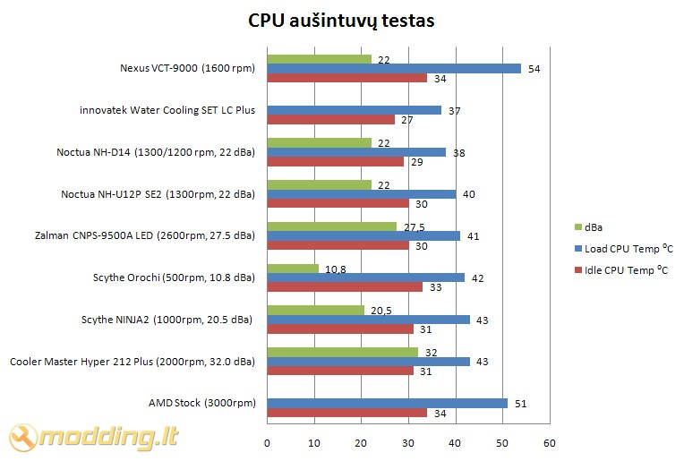

Nexus VCT-9000 aušintuvo apžvalga
Prieš keletą savaičių kompanija Nexus pristatė VCT-9000 procesoriaus aušintuvą. Jis pagamintas naudojant 5 heatpipe vamzdelius, kurie yra išdėstyti L forma. Vamzdeliai turi tiesioginį kontaktą su procesoriumi, o šiluma pernešama į aliuminio plokšteles. Plokštelių forma kiek neįprasta: žiūrint iš šono plokštelių masyvo forma primena trikampį, tačiau išdėstyta laiptuotai. Dar vienas šio aušintuvo išskirtinumas - plokštelė, kuri prispaudžia heatpipe vamzdelius prie CPU, yra pagaminta iš vientiso aliuminio gabalo bei turi nedidelį radiatorių, kurį šiek tiek aušina ventiliatorius. Nestandartinis ir naudojamo 120 mm ventiliatoriaus montavimas - jis sumontuotas 25 laipsnių kampu. Šiandieną turime galimybę išmėginti naująjį Nexus VCT-9000 aušintuvą ir sužinoti jo aušinimo efektyvumą.
Žvilgsnis iš arčiau
Nexus VCT-9000 aušintuvas supakuotas į dėžę, kuri turi permatomą langą šone, todėl pro ją matome aušintuvo fragmentą. Pakuotės šone ir gale pateiktos aušintuvo charakteristikos, aprašymas septyniomis užsienio kalbomis, bei pateikti aušintuvo paveiksliukai.
Pakuotės viduje randame:
- VCT-9000 aušintuvą
- tvirtinimo detales AMD ir Intel platformoms
- termopastą
- termopastos tepimo mentelę
- manual - vartotojo knygelę
- įrankį varžtams sukti
- įrankį Intel sistemos tvirtinimui
Komplektacija ganėtinai kukli, tačiau yra viskas ko reikia aušintuvo montavimui. Komplekte esantys montavimo įrankiai palengvins aušintuvo montavimą. Manual - vartotojo knygelė, yra pakankamai aiški, tačiau galėtų būti pateikta daugiau ir tikslesnių AMD socket montavimui skirtų paveiksliukų.
Nexus VCT-9000 aušintuvas pagamintas naudojant 5 heatpipe vamzdelius, kurie yra išdėstyti L forma. Panaudotas vienas 8 mm diametro ir keturi 6 mm diametro variniai vamzdeliai, kurie yra nikeliuoti. 8 mm heatpipe vamzdelis eina per vidurį, o iš šonų išdėstyta po du 6 mm diametro vamzdelius. Šiluminiai heatpipe vamzdeliai turi tiesioginį kontaktą su procesoriumi, o šiluma pernešama į aliuminio plokšteles, kurių storis vos 0,3 mm. Nepaisant to, kad plokštelės yra labai plonos - radiatorius tvirtas, plokštelės nesilanksto jas užkabinus. Radiatoriaus šonuose yra padarytos specialios, standumą suteikiančios, plokšteles jungiančios briaunos.
Ventiliatorių specifikacijos
- Suderinamumas: Intel Socket 1366 (Core i7), Socket 1156 (Core i5, Core i3), Socket 775, AM3, AM2
- Bendri išmatavimai: 133(ilgis) x 118(plotis) x 154(aukštis) mm
- Ventiliatoriaus išmatavimai: 25(ilgis) x 120(plotis) x 120(aukštis) mm
- Medžiagos: Pure copper nickel plated 1x8mm+4x6mm variniai vamzdeliai/Pure aluminum SkiveTek® radiatorius/Pure aluminum 0,3mm plokštelės
- Ventiliatoriaus apsisukimai: 500 - 1600 RPM (PWM)
- Triukšmo lygis: 15 - 22 dBA
- Guolis: Endurance Sleeve bearing
- Jungtis: 4-pin (PWM)
- Svoris: 635g
- Garantija: 3 metams
Nestandartinis ir naudojamo 120 mm ventiliatoriaus montavimas - jis sumontuotas 25 laipsnių kampu. Esant tokiam posvyrio kampui, ventiliatoriaus sukeliamas oro srautas aušina ne tik aliuminio plokšteles, tačiau ir aliumininį radiatorių, kuris yra virš heatpipe vamzdelių. Aušinimui naudojamas 120 mm, tamsaus plastiko Endurance Sleeve bearing ventiliatorius. Jis turi mėlyną LED apšvietimą - jame sumontuoti keturi mėlyni šviesos diodai. Ventiliatorius turi 4 pin jungtį ir palaiko PWM funkciją, todėl automatiškai reguliuojamos ventiliatorius apsukos gali kisti nuo 500 iki 1600 rpm. Gamintojas nurodo, jog VCT-9000 aušintuvui naudojamo ventiliatoriaus triukšmo lygis yra 15-22 dBa.
Ventiliatorius sumontuotas ant specialaus ištisinio rėmo, kuris tvirtinamas prie radiatoriaus keturiais varžtais: dviem apačioje, šalia heatpipe vamzdelių, ir dviem viršutinėje radiatoriaus dalyje. Deja, šis juodas rėmas apsunkins aušintuvo montavimą, tačiau apie tai kiek vėliau.
Plokštelių forma kiek neįprasta: žiūrint iš šono plokštelių masyvo forma primena trikampį, tačiau išdėstytą laiptuotai. Dar vienas šio aušintuvo išskirtinumas - plokštelė, kuri prispaudžia heatpipe vamzdelius prie CPU, yra pagaminta iš vientiso aliuminio gabalo bei turi nedidelį radiatorių, kurį šiek tiek aušina ventiliatoriaus sukeliamas oro srautas. Ant heatpipe vamzdelių išdėstyta viena plokštelė, o prie jos prisuktas aliumininis radiatorius. Tarp šių plokštelių yra tarpas, kuris reikalingas montuojant aušintuvai ant AMD sistemos.
Tvirtinimas
Nexus VCT-9000 aušintuvą montavau AM2 sistemai. Visų pirma, užtepiau komplekte buvusią termopastą, tam naudojau specialią mentelę, kuri taip pat buvo komplektacijoje. Deja, komplekte esanti termopasta yra per tiršta ir ją tepant ji "veliasi", sunku ją lygiai paskirstyti ant CPU paviršiaus.
Montuojant aušintuvą ant AMD sistemos, prie aušintuvo radiatoriaus reikia pritvirtinti specialias tvirtinimo auseles. Atlaisvinami varžtai, suspaudžiantys radiatoriaus aliumininę plokštelę ir plokštelę, kuri laiko heatpipe vamzdelius. Tuomet į tarpą įstatomos auselės ir užveržiami varžtai. Jau galima aušintuvą montuoti ant procesoriau, tačiau iškilo šiokia tokia bėda: varžtai, kurie įtempia ir prispaudžia radiatorių prie CPU,yra po radiatoriumi ir po ventiliatorių laikančiu rėmu, todėl įrankis, kuris pridedamas komplekte, varžtą gali pasukti vos 20-30⁰ kampu.

Esant tokiam mažam veikimo kampui, prisukti varžtą darosi sudėtinga, kadangi varžto galva yra šešiakampė. Gal ir įmanoma tai atlikti, tačiau bus sugaišta daug laiko. Mano pasiūlymas - nuimti ventiliatorių laikantį rėmą. Jį nuėmus varžtus galima prisukti žymiai lengviau.
Atsuku ventiliatoriaus rėmą laikančius varžtus ir nuimu ventiliatorių. Prisuku varžtus sukdamas po truputį iš kiekvienos pusės - taip sukti reikia tam, kad vienodžiau prisispaustų radiatorius prie CPU ir geriau pasiskirstytų termopasta.
Nexus VCT-9000 aušintuvas sumontuotas, kaip matote vietos tarp radiatoriaus ir galinėje korpuso sienelėje esančio ventiliatoriaus praktiškai nėra - atstumas vos keli milimetrai. Manau visai logiška būtų atsisakyti ant aušintuvo montuojamo ventiliatoriaus ir naudoti ištraukiantį korpuso ventiliatorių - jei CPU ne itin kaista, tokio oro srauto turėtų pakakti.
Dabar beliko atlikti temperatūrų testus ir sužinoti, ar visi konstrukciniai patobulinimai pasiteisins ir aušintuvas turės gerą aušinimo efektyvumą.
Rezultatai
Testavimo sistema:
- CPU Cooler - Nexus VCT-9000
- Case - Antec Mini P180
- Mainboard - Asus M2N68-AMSE2
- CPU - AMD ATHLON 64 X2 Dual-Core 5000+ AM2 (65W)
- RAM - Corsair DDR2 KIT 2X1G 800MHZ TWIN2X2048-6400 G
- HDD - SEA BARRACUDA 160GB 7200 rpm
- PSU - Cooler Master Silent Pro M700
- Case Fans - Noctua NF-S12B FLX 120 mm (1200 rpm, 100.6 m³/h, 1.31 mm H2O), Antec 200 mm TriCool (400rpm, 39 CFM)
Procesoriaus (CPU) temperatūra testuojama Idle ir Load rėžimais. Load rėžimui naudojama Orthos programa. Temperatūros rodmenys stebėti SpeedFan 4.39 bei PC Probe II V1.04.74 programomis. Testavimams naudotas Antec Mini P180 korpusas galinėje sienelėje turi Noctua NF-S12B FLX 120mm orą ištraukiantį aušintuvą (1200 rpm, 100.6 m³/h, 1.31 mm H2O), o taip pat viršuje esantį, orą ištraukiantį, Antec 200 mm TriCool ventiliatorių (400rpm, 39 CFM).

Nexus VCT-9000 rezultatai nuliūdino: jie blogesni net už AMD Stock aušintuvo rezultatus. Manau, kad didžiausią įtaką tokiems prastiems rezultatams turėjo sunkiai tepi, prasta termopasta. Ją buvo sunku tinkamai paskleisti po CPU paviršių, o taip pat dėl savo konsistencijos ji neužpildė tarpų tarp heatpipe ir radiatoriaus, ko pasekoje paviršiai nesilietė ir neperdavė šilumos. Nuėmęs aušintuvą nuo CPU jį apžiūrėjau ir pamačiau, kad labai nedidelis heatpipe plotas išsitepęs termopasta nuo CPU, o tai reiškia, kad blogas kontaktas tarp jų. Aušintuvas buvo prisuktas tvirtai, todėl dėl blogo kontakto greičiausiai kaltas nelygus heatpipe paviršius. Testavau kelis kartus: atlikdamas antrą testą padengiau tiek CPU tiek heatpipe plonu termopastos sluoksniu - rezultatai nebuvo geresni. Galbūt visą padėtį galėtų pakeisti gera, tinkamos konsistencijos termopasta, tačiau testavimai atliekami su rinkinyje esančiomis, gamintojo rekomenduojamomis, termopastomis, todėl nelaužant testų taisyklių paliekame tokius testų rezultatus, kokius gavome dabar.
Norėdamas sužinoti, kodėl gauti prasti testų rezultatai, dėmesį atkreipiau į heatpipe paviršių. Kaip jau minėjau, nuėmęs aušintuvą nuo CPU pamačiau, kad mažas jo plotas pasidengęs termopasta. Nutariau aušintuvą padėti ant lygaus paviršiau ir pažiūrėti, ar tarp paviršiau ir heatpipe vamzdelių nėra tarpų.
Foto gal ir neparodo tikslaus vaizdo, tačiau manau matoma, jog heatpipe nepriglunda prie paviršiaus visu savo plotu. Vidutinis, storiausias heatpipe vamzdelis priglunda blogiausiai, šalia esantys kiek geriau, na o kraštiniai - priglunda beveik visu plotu.
Mėginu išsiaiškinti, ar šie tarpai gali būti kompensuojami termopasta ir ar jie turi didelę įtaką aušinimui. Pasinaudoju Titan Silver Grease, kurios efekryvumą galite rasti mano anksčiau atliktame teste. Ištepu CPU paviršių ganėtinai storu termopastos kiekiu ir uždedu aušintuvą. Aušintuvą prispaudžiu prie CPU kad termopasta pasiskirstytų vienodžiau.

Nuėmus aušintuvą ir apžiūrint jį rezultatas aiškus - heatpipe vamzdelių paviršius tinkamai nepriglunda prie CPU, lieka tarpas kuris ir įtakoja prastus aušinimo rezultatus.
Forumiečių prašymu pateikiu testą naudojant Titan Silver Grease - ne gamintojo rekomenduojamą termo pastą. Titan Silver Grease yra skystesnės ir geresnės konsistencijos, nei Nexus komplektuojama termopasta, todėl tikiuosi, jog rezultatai bus geresni. Kadangi iš foto aišku, jog blogiausiai su CPU paviršiumi kontaktuoja aušintuvo vidurys - į vidurį pridedu daugiau termo pastos. Gan storu termopastos sluoksniu ištepu visą CPU paviršių - jos perteklius prispaudus aušintuvu pasišalins savaime.
Gautas naujas rezultatas, naudojant didelį kiekį skystesnės konsistencijos termopastos, kuri kompensavo heatpipe vamzdelių nelygumus, yra geresnis: idle 32⁰C ir load 47⁰C. Tačiau ir šis rezultatas yra prasčiausias lyginant su kitais modding.lt testuotais aušintuvais.
Išvados
Pliusai:
- novatoriškas dizainas
- PWM ventiliatorius
- ventiliatorius su mėlynu LED apšvietimu
- komplekte pridedami įrankiai montavimui
Minusai:
- prasti aušinimo rezultatai
- nepatogus montavimas AMD sistemai
- tiršta ir sunkiai tepi termopasta
Nexus VCT-9000 aušintuvas turi novatorišką dizainą ir kelis nestandartinius konstrukcinius sprendimus, tokius kaip ventiliatoriaus montavimas 25⁰ kampu bei SkiveTek technologija, kuri panaudota gaminant radiatorių. 120 mm mėlyną LED apšvietimą turintis ventiliatorius palaiko PWM funkciją, tačiau jo skleidžiamas triukšmo lygis man nepasirodė itin mažas (max apsukomis). Deja aušintuvas turi kelis esminius minusu:s kalbant apie konstrukcinius trūkumus, norėčiau paminėti nepatogų montavimą AMD platformai - sudėtinga prisukti užveržimo varžtus, norint tai atlikti lengviau, tenka nuimti ventiliatorių su rėmeliu. Atlikus aušintuvo testus nenudžiugino ir jo efektyvumas: jo rezultatai buvo blogesni net už AMD Stock aušintuvo rezultatus. Tam įtakos turėjo komplektuojama termopasta, kuri yra per tiršta bei sunkiai tepi, todėl ji neužtikrino reikiamo kontakto tarp CPU ir aušintuvo. Kitas dalykas, kuris įtakojo aušinimo rezultatus, heatpipe vamzdelių lietimosi plotas: nuėmus aušintuvą nuo CPU, heatpipe vamzdeliai buvo išsitepę termopasta ne visu plotu, o tai reiškia, jog heatpipe tinkamai nepriglunda prie CPU ir nesuformuoja lygaus lietimosi paviršiaus. Nexus VCT-9000 aušintuvo testų rezultatai gali būti geresni, tačiau tam reikia geresnės termopastos nei esanti komplektacijoje. Kalbant apie šio gaminio kainą - ji yra ~170Lt. Jei visgi nuspręsite įsigyti šį aušintuvą - patariu iškarto įsigyti ir geresnę termopastą, bei tepti jos didesnį kiekį nei įprasta - termopasta kompensuos heatpipe paviršiau ir CPU tarpus.
modding.lt šiam gaminiui suteikia 4 balus iš 10.
Modding.lt komanda dėkoja Dennis van Driel iš www.nexustek.nl už apžvalgai suteiktą produktą.
Jei norėsite pakomentuoti mano straipsnį arba pareikšti savo nuomonę, apsilankykite Modding.lt forume.


{kind=link}
{kind=link}
{kind=link}
{kind=link}
{kind=link}
{kind=link}
{kind=link}
{kind=link}
{kind=link}
{kind=link}
{kind=link}
{kind=link}
{kind=link}
{kind=link}
{kind=link}
{kind=link}
{kind=link}
{kind=link}
{kind=link}
{kind=link}
{kind=link}
{kind=link}
{kind=link}
{kind=link}
{kind=link}
{kind=link}
{kind=link}
{kind=link}